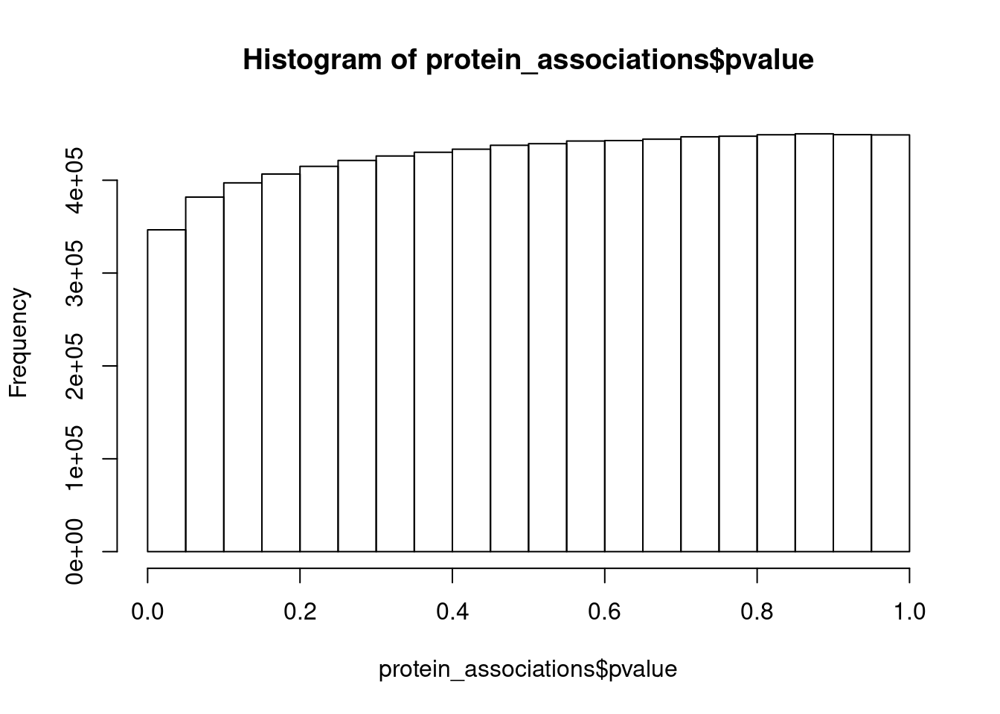
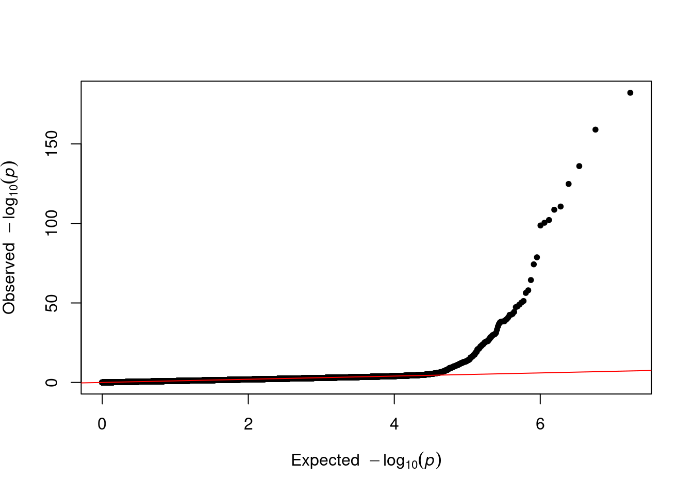
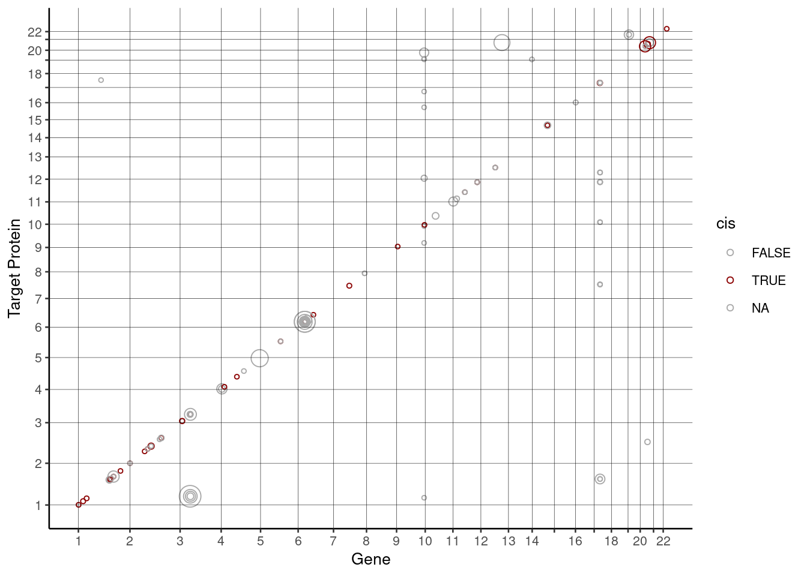

Last updated: 2021-03-23
Checks: 7 0
Knit directory: TWAS_for_protein/
This reproducible R Markdown analysis was created with workflowr (version 1.6.2). The Checks tab describes the reproducibility checks that were applied when the results were created. The Past versions tab lists the development history.
Great! Since the R Markdown file has been committed to the Git repository, you know the exact version of the code that produced these results.
Great job! The global environment was empty. Objects defined in the global environment can affect the analysis in your R Markdown file in unknown ways. For reproduciblity it’s best to always run the code in an empty environment.
The command set.seed(20210127) was run prior to running the code in the R Markdown file. Setting a seed ensures that any results that rely on randomness, e.g. subsampling or permutations, are reproducible.
Great job! Recording the operating system, R version, and package versions is critical for reproducibility.
Nice! There were no cached chunks for this analysis, so you can be confident that you successfully produced the results during this run.
Great job! Using relative paths to the files within your workflowr project makes it easier to run your code on other machines.
Great! You are using Git for version control. Tracking code development and connecting the code version to the results is critical for reproducibility.
The results in this page were generated with repository version 47bc7ed. See the Past versions tab to see a history of the changes made to the R Markdown and HTML files.
Note that you need to be careful to ensure that all relevant files for the analysis have been committed to Git prior to generating the results (you can use wflow_publish or wflow_git_commit). workflowr only checks the R Markdown file, but you know if there are other scripts or data files that it depends on. Below is the status of the Git repository when the results were generated:
Ignored files:
Ignored: .RData
Ignored: .Rhistory
Ignored: .Rproj.user/
Untracked files:
Untracked: code/henry@10.22.9.205
Unstaged changes:
Modified: code/protein_association.py
Note that any generated files, e.g. HTML, png, CSS, etc., are not included in this status report because it is ok for generated content to have uncommitted changes.
These are the previous versions of the repository in which changes were made to the R Markdown (analysis/building_the_pipeline.Rmd) and HTML (docs/building_the_pipeline.html) files. If you’ve configured a remote Git repository (see ?wflow_git_remote), click on the hyperlinks in the table below to view the files as they were in that past version.
| File | Version | Author | Date | Message |
|---|---|---|---|---|
| Rmd | 47bc7ed | hwittich | 2021-03-23 | Graphing the output of predictAssociation.py on every protein for the Whole_Blood model in the ALL population. |
| html | 269753e | hwittich | 2021-03-17 | Build site. |
| Rmd | a2b5524 | hwittich | 2021-03-17 | Analysis file describing building and testing the pipeline |
| html | 1cac390 | hwittich | 2021-03-01 | Build site. |
| Rmd | bb7a15e | hwittich | 2021-03-01 | Ran PrediXcan successfully once, and began building pipeline to run it on all |
Now that I have successfully run the PrediXcan software and found significant associations between SNPs on chromsome 22 of individuals in the AFA population and their levels of the protein, SLO11772_ENSG00000100029.18, the next step is to perform the same analysis on a bigger set of data, building a pipeline in the process. All of this will be handled in the python wrapper:
– protein_association.py
python3 protein_association.py --dosages /home/hwittich/mount/TWAS_for_protein/TOPMed_Test_Data/nohead_hg38chr22.maf0.01.R20.8.dosage.txt --exp /home/hwittich/mount/TWAS_for_protein/TOPMed_Test_Data/en_Whole_Blood.db --proteins /home/hwittich/mount/TWAS_for_protein/TOPMed_Test_Data/test_prot_expression.txt --samples /home/hwittich/mount/TWAS_for_protein/TOPMed_Test_Data/samples.txt So, I’ve run PrediXcan on every protein using the Whole_Blood GTeX model in the ALL population. First, all of our p-values are divided across 1,279 files, separated by protein. Let’s combine them to analyze all of our associations at once with the script: – concatenate_results.py
Now let’s look at our results:
protein_associations <- read.table("/home/hwittich/mount/TWAS_for_protein/output/3-22-2021/Whole_Blood_every_protein_association.txt",header = TRUE, sep="\t")
library(qqman)For example usage please run: vignette('qqman')Citation appreciated but not required:Turner, S.D. qqman: an R package for visualizing GWAS results using Q-Q and manhattan plots. biorXiv DOI: 10.1101/005165 (2014).hist(protein_associations$pvalue)
qq(protein_associations$pvalue)
Great, looking at our histogram, it is clear that we have some significant hits. THis is further supported by our qqplot, which shows that most of the SNPs follow the identitity line, while a handful of SNPs are significant.Let’s subset the significant SNPs.
library(dplyr)
Attaching package: 'dplyr'The following objects are masked from 'package:stats':
filter, lagThe following objects are masked from 'package:base':
intersect, setdiff, setequal, unionlibrary(tidyr)
#First, calculate the bonferroni threshold
#=0.5/((#proteins tested * #transcripts predicted)/total # of tests)
n_proteins<-1279 #length of protein matrix (sort of, duplicates were removed)
n_transcripts<-6689 #length of association output
alpha<-0.05
bonferroni_threshold=alpha/(n_proteins*n_transcripts)
sig_hits <- filter(protein_associations,pvalue<bonferroni_threshold) %>% separate(gene,sep="\\.",into=c("gene_id","gene_version"))Now, for every significant hit, we want to compare the predicted transcript and the protein it is associated with. By comparing the location of each, we can determine if we have a cis-acting or trans-acting hit.
#Let's pull in the chromosomal coordinates of the predicted transcript
gene_annotation <- read.table("/home/hwittich/mount/TWAS_for_protein/TOPMed_ALL_data/gene_annotation_hg38_sanitized_BP_CHROM.txt",header=T,sep=" ") %>%
select(gene_id,chrchr,start)
sig_hits <- left_join(sig_hits, gene_annotation, by = c("gene_id"="gene_id"), copy=TRUE) %>% rename("gene_chr"="chrchr","gene_start"="start")
#Now let's pull in the chromosomal coordinates of the associated protein
protein_annotation <- read.table("/home/hwittich/mount/TWAS_for_protein/TOPMed_ALL_data/somascan1.3k_gencode.v32_annotation.txt",header=T,sep="\t") %>% select(SomaId,ENSG_id,chr,start) %>% rename("protein_ID"="ENSG_id","protein_chr"="chr","protein_start"="start")
sig_hits <- left_join(sig_hits,protein_annotation, by = c("protein"="SomaId"), copy=TRUE)Next, we have to correct the positions of each gene so that they’re relative to the whole genome, not just the chromosome they’re on.
chromosomes<-c("chr1","chr2","chr3","chr4","chr5","chr6","chr7","chr8","chr9","chr10","chr11","chr12","chr13","chr14","chr15","chr16","chr17","chr18","chr19","chr20","chr21","chr22","chrX","chrY")
lengths<-c(248956422,242193529,198295559,190214555,181538259,170805979,159345973,145138636,138394717,133797422,135086622,133275309,114364328,107043718,101991189,90338345,83257441,80373285,58617616,64444167,46709983,50818468,156040895,57227415)
#Calculate chr start positions by summing length of prior chromosomes
starts <- rep(NA,24)
sum=0
for(i in 1:24){
starts[i] = sum
sum = sum + lengths[i]
}
chr_len<-data.frame(chromosomes,starts)
#Now join the lengths to the sig_hits dataframe
sig_hits<-left_join(sig_hits,chr_len,by=c("gene_chr"="chromosomes"),copy=TRUE) %>% rename("gene_chr_start"="starts")
sig_hits<-left_join(sig_hits,chr_len,by=c("protein_chr"="chromosomes"),copy=TRUE) %>% rename("protein_chr_start"="starts")
#Finally, add the chromosome starting position to the gene starting positions
sig_hits<-mutate(sig_hits,new_protein_start = protein_chr_start + protein_start) %>% mutate(new_gene_start = gene_chr_start+gene_start)
#Then, let's compare the positions to determine if a gene is trans-acting or cis-acting
sig_hits<-mutate(sig_hits,cis = ifelse((new_gene_start-500)<=new_protein_start & new_protein_start<=(new_gene_start+500),TRUE,FALSE))Now let’s plot the chromosomal position of the transcript vs the chromosomal position of the associated protein for every significant hit!
library(ggplot2)
ggplot(sig_hits,aes(x=new_gene_start,y=new_protein_start,size=pvalue,color=cis)) +
geom_point(shape=21) +
scale_size_continuous(guide=FALSE) +
scale_color_manual(values=c("dark gray","dark red"),na.value="dark gray") +
geom_hline(yintercept=starts[1:22],size=0.1) +
geom_vline(xintercept=starts[1:22],size=0.1) +
coord_cartesian(xlim=c(starts[1],starts[22]),ylim=c(starts[1],starts[22])) +
theme_classic(10) +
xlab("Gene") +
ylab("Target Protein") +
scale_x_continuous(breaks=starts[1:22],labels=c(1:14,"",16,"",18,"",20,"",22)) +
scale_y_continuous(breaks=starts[1:22],labels=c(1:16,"",18,"",20,"",22))Warning: Removed 1 rows containing missing values (geom_point).
sessionInfo()R version 3.6.3 (2020-02-29)
Platform: x86_64-pc-linux-gnu (64-bit)
Running under: Ubuntu 20.04.2 LTS
Matrix products: default
BLAS: /usr/lib/x86_64-linux-gnu/blas/libblas.so.3.9.0
LAPACK: /usr/lib/x86_64-linux-gnu/lapack/liblapack.so.3.9.0
locale:
[1] LC_CTYPE=en_US.UTF-8 LC_NUMERIC=C
[3] LC_TIME=en_US.UTF-8 LC_COLLATE=en_US.UTF-8
[5] LC_MONETARY=en_US.UTF-8 LC_MESSAGES=en_US.UTF-8
[7] LC_PAPER=en_US.UTF-8 LC_NAME=C
[9] LC_ADDRESS=C LC_TELEPHONE=C
[11] LC_MEASUREMENT=en_US.UTF-8 LC_IDENTIFICATION=C
attached base packages:
[1] stats graphics grDevices utils datasets methods base
other attached packages:
[1] ggplot2_3.3.3 tidyr_1.1.3 dplyr_1.0.3 qqman_0.1.4
[5] workflowr_1.6.2
loaded via a namespace (and not attached):
[1] Rcpp_1.0.6 pillar_1.4.7 compiler_3.6.3 later_1.1.0.1
[5] git2r_0.28.0 tools_3.6.3 digest_0.6.27 gtable_0.3.0
[9] evaluate_0.14 lifecycle_0.2.0 tibble_3.0.5 pkgconfig_2.0.3
[13] rlang_0.4.10 rstudioapi_0.13 yaml_2.2.1 xfun_0.20
[17] withr_2.4.0 stringr_1.4.0 knitr_1.30 generics_0.1.0
[21] fs_1.5.0 vctrs_0.3.6 grid_3.6.3 rprojroot_2.0.2
[25] tidyselect_1.1.0 glue_1.4.2 calibrate_1.7.7 R6_2.5.0
[29] rmarkdown_2.6 farver_2.0.3 purrr_0.3.4 magrittr_2.0.1
[33] whisker_0.4 scales_1.1.1 promises_1.1.1 ellipsis_0.3.1
[37] htmltools_0.5.1.1 MASS_7.3-51.5 colorspace_2.0-0 httpuv_1.5.5
[41] stringi_1.5.3 munsell_0.5.0 crayon_1.3.4